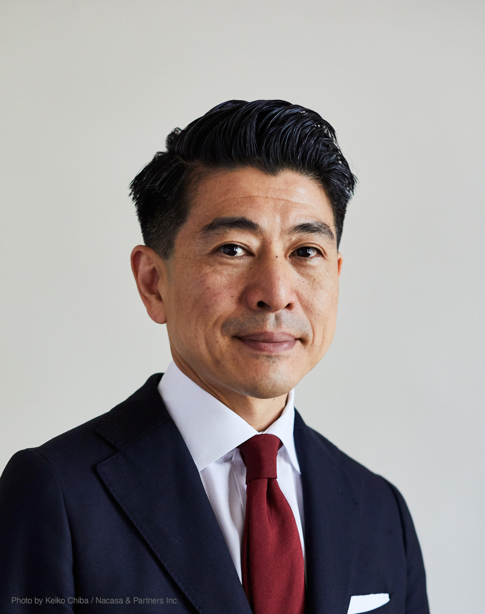

I welcome inquiries about research collaboration, speaking, and academic exchange. 研究協力・講演・学術交流に関するお問い合わせを歓迎します。

企業の報酬制度の設計がパフォーマンスに影響を与え、情報開示のあり方が購買行動を変えうるように、人と人の間に介在するルールや情報構造は、関係と行動を大きく左右することがあります。そうだとすれば、複数の主体が存在する状況において、ルールや情報伝達の経路を意図的に設計することで、より望ましい結果へと近づけられるのではないでしょうか。
デザインの対象を「モノをつくること」にとどまらず、人々の参加・協働・意味形成が生まれる条件へと広げることを研究の軸としています。
近年はAIエージェントが参加主体として加わることで、人間間の相互作用を前提に設計されてきた制度やルールの根本的な前提が変わりうる点に注目しています。AIが社会参加した状態においても安定的に機能する制度設計のあり方を問い続けています。
起業家としての実践を起点に、メカニズムデザイン・共創・ユーザーイノベーションの各理論を援用しながら社会実装の可能性を高めます。方法論としては参加型デザインとプロトタイピングを用い、エフェクチュエーションやリーン・スタートアップの視点も取り入れながら、研究成果を論文・特許・事業化へと繋げることを目指しています。
The design of a firm's reward system shapes performance; how information is disclosed in an online service changes purchasing behavior. Rules and information structures that mediate interaction determine relationships and action. The question driving my research is whether, in settings involving multiple actors, deliberately designed rules and information flows can produce more desirable outcomes.
My design interest lies in extending the scope of design beyond making things to the conditions under which people participate, collaborate, and create meaning.
I am interested in how to redesign rules and incentives originally built for human-only societies to accommodate societies in which AI agents are also participants — and in how to ensure that such redesigned rules remain sufficiently stable and functional when AI is a social actor.
Drawing on my experience as an entrepreneur, I apply mechanism design, co-creation, and user innovation theory to strengthen the path to real-world implementation. Participatory design and prototyping serve as methodological tools, complemented by insights from effectuation and lean startup, with findings directed toward papers, patents, and implementation.
Investigating how users and firms co-create value through online platforms. Drawing on longitudinal data from LEGO CUUSOO / LEGO IDEAS, this research models user participation behavior in open innovation contexts. オンラインプラットフォームを通じたユーザーと企業の価値共創プロセスを研究しています。ユーザーが提案したアイデアを企業が商業化するLEGO CUUSOO / LEGO IDEASを分析対象として、いかなるルール・インセンティブ設計が双方の利益を最大化するかを明らかにすることを目指しています。
Analyzing strategic interactions among consumers connected to electricity networks, with a focus on cooperation between data centers and heat consumers. Applying cooperative game theory to model value allocation in distributed energy systems. 電力ネットワークに接続したタイプの異なる需要家それぞれの利得構造を理解した上で、どのようなメカニズムを設計すれば社会厚生を高める相互作用が需要家間で自律的に生じるかを考えています。現在は、データセンターと熱需要家の間で熱を融通しうる潜在的な協力関係に着目し、協力ゲーム理論を用いた分散型エネルギーシステムにおける価値配分モデルの社会実装に取り組んでいます。
Research Approach 研究のアプローチ
Stakeholder behavior is observed and translated into formal problems — interaction rules, information structures, and incentive designs — then tested and refined through field deployment. 行動観察から出発し、相互作用のインセンティブ構造・情報設計・ルールとして問題を形式化・モデル化します。現場実装による検証と改善のサイクルを通じて、理論の精緻化を図ります。
Design is not artifact-making but the configuration of social conditions — linking mechanism design with Participatory Design to shape how people participate and cooperate. デザインをモノの制作としてだけではなく、人々の参加や協働が生まれる条件の構成として捉え、経済学のメカニズムデザインにデザインの手法を組み合わせて取り組みます。
Keeping models grounded in reality — close to the practitioner's perspective — is our core discipline. Ongoing dialogue with managers connects research to present-day challenges and real-world implementation. 実務の視点に寄り添い、モデルを現実に接続し続けることを研究の規律としています。過去の事例にとどまらず、現在進行形の社会的課題にも向き合うため、実際の経営者との対話を重ね、社会実装に資する研究を目指します。
A growing body of research demonstrates that a substantial share of innovation originates from users themselves, independently of firms and universities (von Hippel 1988, 2005). How can we characterize, measure, and design institutional conditions that enable this distributed innovative activity? 多くの先行研究が示すように、イノベーションの相当部分はユーザー自身によって生み出されており、企業や大学とは独立して発生しています（von Hippel 1988, 2005）。こうした分散したイノベーション活動を特徴づけ、計測し、それを可能にする制度条件をいかに設計するかを探求しています。
The rules that govern behavior on platforms extend beyond statutory law to include platform governance rules — terms of service, participation constraints, and reward structures — as well as emergent social norms among users. How these platform-level institutions can be designed to produce socially desirable outcomes is a central theme. プラットフォーム上の行動を規定するルールは、法制度にとどまらず、利用規約・参加条件・報酬構造などのプラットフォーム・ガバナンスルール、さらにユーザー間に自生する社会規範にまで及びます。こうしたプラットフォーム水準の制度を社会的に望ましい結果に向けていかに設計するかが主要テーマです。
Using multi-actor mathematical models grounded in game theory, we can simulate user behavior under conditions not directly observable in the real world. Comparing theoretical predictions against observed outcomes reveals where institutional interventions are most effective. Through this approach, formal theory is transformed into a practical tool for social implementation, connecting mechanism design to real-world policy and platform governance. ゲーム理論をもとにした複数アクターが参加する数理モデルを用いることで、実社会では直接観測できない条件下でのユーザー行動をシミュレーションすることができます。理論値と観測値の乖離を比較分析することで、どこに制度的介入が最も有効かが明らかになります。このアプローチにより、理論を社会実装のための実践的ツールへと転換し、メカニズムデザインを現実の政策やプラットフォーム・ガバナンスへと繋げます。
Journal Articles査読論文
Books著書
Patents特許
Grants研究資金
Japanese Patent No. 4361235; US Patent No. 7,467,114 B1 (2008). Filed in 2000 — prior to the mainstream adoption of crowdfunding — this patent covers a system for collecting user-generated product proposals and aggregating demand data to support commercialization decisions. 特許第4361235号、米国特許第7,467,114 B1（2008年）。クラウドファンディングが普及する以前の2000年に出願。ユーザーが生成した製品提案を収集し、需要データを集約して商品化判断を支援するシステムを特許化しました。
Developed and operated an open innovation platform in collaboration with the LEGO Group, enabling users to propose and vote on product ideas. The platform reached 530,000 registered users globally before the business was transferred to LEGO, which relaunched it as LEGO IDEAS — an empirically documented case of user co-creation in the open innovation literature. LEGOグループと連携してオープンイノベーションプラットフォームを開発・運営。世界53万人の登録ユーザーを獲得後、LEGOへ事業譲渡。LEGO IDEASとして継続運営されており、オープンイノベーション研究において実証的に記録されたユーザー共創の事例です。
Designed and operated an online crowdfunding platform for MUJI (Ryohin Keikaku). When a user-submitted idea accumulated 1,000 votes, MUJI officially commercialized it. The long-selling "MUJI Sofa That Fits Your Body," designed by Fumie Shibata, was among the products realized through this mechanism. 無印良品（良品計画）向けのオンラインクラウドファンディングプラットフォームを設計・運営。ユーザーが投票で1,000票を集めると商品化される仕組みを実装。デザイナー・柴田文江氏によるロングセラー「体にフィットするソファ」はこの仕組みで生まれました。
Provided the platform mechanisms for LEGO CUUSOO through which the LEGO Minecraft set reached 10,000 user votes in under 48 hours — a record at the time for any user-generated idea on the platform. The set was subsequently commercialized as an official LEGO product. LEGO CUUSOO上のプラットフォームメカニズムを通じ、LEGO Minecraftセットが48時間以内に1万票を達成。当時のユーザー生成アイデアとして史上最速の記録でした。その後、公式LEGO製品として商品化されました。
Developed a demand response platform to facilitate electricity load reduction in Greater Tokyo following supply constraints after the 2011 Tōhoku earthquake. The system monitored real-time supply–demand gaps and delivered load-reduction notifications to 800,000 registered users. Subsequently recognized by the Japanese government as a designated platform for demand-shift coordination. 2011年東日本大震災後の電力需給逼迫に対応し、首都圏における電力需要削減を支援する需要応答プラットフォームを開発。リアルタイムの需給ギャップを監視し、登録ユーザー80万人に節電通知を配信。その後、日本政府の需要シフト調整の指定プラットフォームとして認定されました。
Co-founded a parcel delivery service operating in Australia and the United States, aggregating distributed delivery capacity to reduce logistics costs for small businesses. Served as Co-founder and Board Member until 2021. オーストラリア・米国で小口配送サービスを共同創業。分散した配送キャパシティを集約し、中小事業者の物流コスト削減を実現。2021年まで共同創業者・取締役を務めました。
| Period期間 | Institution機関 | Course / Topic科目・テーマ |
|---|---|---|
| 2020–2025 | Yale University, School of Management | Why Customers Work with Corporations on Platforms なぜ顧客はプラットフォームで企業と協働するのか |
| 2019, 2024 | Seoul National University, Business School | Platform Management & Service Marketing (MBA) プラットフォーム経営・サービスマーケティング（MBA） |
| 2018–2025 | Hitotsubashi University Business School (ICS) | Aggregating Distributed Values – Managing Customer-Created Value (MBA) 分散価値の集約：顧客創造価値の経営（MBA） |
| 2019 | The University of Tokyo, College of Arts and Sciences 東京大学 教養学部 | Mechanism Design for Online Services オンラインサービスのメカニズムデザイン |
| 2012– | Tama Art University, Faculty of Art, Dept. of Information Design, Visiting Professor 多摩美術大学 美術学部 情報デザイン学科、客員教授 | Business Management and Mechanism Design: Mechanisms for Sustained Service Use, Dept. of Information Design ビジネス経営とメカニズムのデザイン－ユーザーにサービスを使い続けてもらうためのメカニズム、情報デザイン学科 |
Other Recognitions その他の表彰・役職